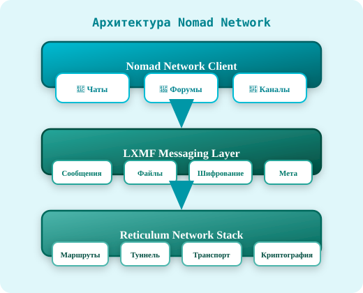
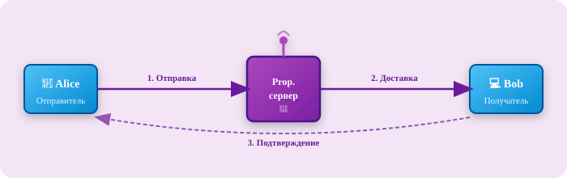
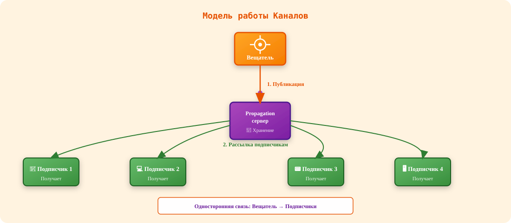
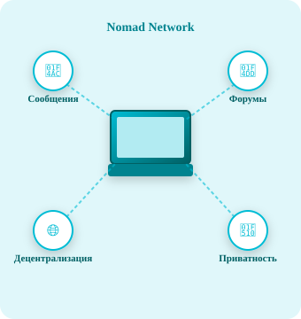
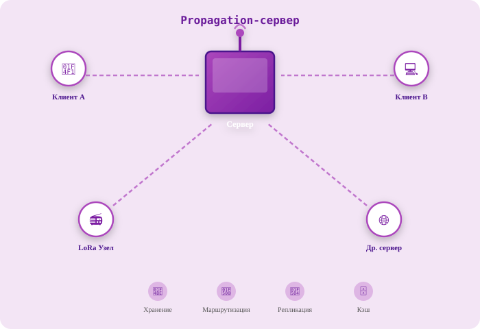

Nomad Network¶
Nomad Network — это децентрализованный клиент для общения, работающий поверх LXMF и Reticulum. Он предоставляет возможности для обмена сообщениями, участия в форумах и подписки на каналы — всё это без центрального сервера, цензуры и сбора данных.
Архитектура¶
Nomad Network построен на трёх уровнях стека Reticulum:
{kind=link}

Каждый уровень инкапсулирует функциональность нижележащего, предоставляя пользователю единый интерфейс для децентрализованного общения.
Ключевые возможности¶
💬 Личные сообщения¶
Прямое общение между пользователями с использованием LXMF:
- Сквозное шифрование — сообщения доступны только отправителю и получателю
- Асинхронная доставка — сообщения хранятся в сети до получения адресатом
- Подтверждения — уведомления о доставке и прочтении
- Вложения — поддержка файлов и изображений
{kind=link}

📝 Форумы¶
Публичные пространства для обсуждений, работающие по принципу распределённой доски объявлений:
| Характеристика | Описание |
|---|---|
| Тематические разделы | Форумы организуются по темам и категориям |
| Модерация | Создатель форума управляет доступом и контентом |
| Репликация | Сообщения распространяются между узлами сети |
| Анонимность | Публикация без привязки к реальной личности |
Как работают форумы:
- Пользователь подключается к форуму по его идентификатору
- Загружает последние сообщения из сети
- Публикует новые сообщения, которые распространяются среди подписчиков
- Сообщения кэшируются на узлах Propagation-серверов
📰 Каналы¶
Односторонние новостные ленты для распространения информации:
- Подписка — пользователи подписываются на интересующие каналы
- Вещание — владелец канала публикует обновления
- Автообновление — новые сообщения доставляются подписчикам автоматически
- Примеры использования: новостные ленты, блоги, уведомления сервисов
{kind=link}

🔐 Приватность и безопасность¶
-
🔒 Сквозное шифрование
Все сообщения шифруются на устройстве отправителя и расшифровываются только на устройстве получателя
-
🎭 Анонимность
Не требуется регистрация, email, телефон или любые персональные данные
-
🌐 Децентрализация
Нет единого сервера или точки отказа — сеть работает на узлах пользователей
-
🛡️ Криптография
Используется современная криптография (Curve25519, AES, SHA-256)
Как это работает?¶
Сетевая топология¶
Nomad Network работает в любой сетевой конфигурации:
{kind=link}

Все узлы равноправны и могут маршрутизировать трафик для других участников сети.
Propagation-серверы¶
Серверы распространения играют ключевую роль в доставке сообщений:
{kind=link}

Функции Propagation-серверов:
- Хранение сообщений для офлайн-получателей
- Маршрутизация сообщений между узлами сети
- Репликация данных между серверами
- Кэширование часто запрашиваемых сообщений
Конфигурация¶
Базовая настройка¶
Конфигурационный файл Nomad Network (~/.nomadnetwork/config):
[default]
# Идентификатор узла (генерируется автоматически)
private_key = <ваш_закрытый_ключ>
# Подключение к сети
enable_distribution_server = True
distribution_server_port = 9000
# Интерфейс
language = ru
editor = nano
# Безопасность
allow_unsigned_messages = False
max_message_size = 50KB
Подключение к форумам¶
Для подключения к форуму добавьте его идентификатор в конфигурацию:
[forums]
# Формат: forum_name = lxmf_address
main_forum = <адрес_форума>
news = <адрес_новостного_форума>
Интеграция с другими клиентами¶
Nomad Network совместим с другими LXMF-клиентами:
| Клиент | Совместимость |
|---|---|
| Sideband | ✅ Полная — обмен сообщениями и файлами |
| Columba | ✅ Полная — обмен сообщениями |
| MeshChat | ✅ Частичная — текстовые сообщения |
| Другие LXMF | ✅ Базовая — через стандартный протокол |
Использование¶
Запуск клиента¶
# Запуск Nomad Network
nomadnet
# Запуск в фоновом режиме
nomadnet --daemon
# Проверка статуса
nomadnet --status
Основные команды¶
| Команда | Описание |
|---|---|
/chat <address> |
Начать чат с указанным адресом |
/forum <name> |
Подключиться к форуму |
/channel <id> |
Подписаться на канал |
/send <address> <message> |
Отправить сообщение |
/list |
Показать список контактов и форумов |
/help |
Показать справку |
Преимущества и ограничения¶
✅ Преимущества¶
- Полная децентрализация — нет зависимости от центральных серверов
- Работа в офлайн-сетях — функционирует без интернета
- Устойчивость к цензуре — сообщения невозможно заблокировать
- Конфиденциальность — никакой телеметрии и сбора данных
- Кроссплатформенность — работает на Linux, macOS, Windows, Android
⚠️ Ограничения¶
- Скорость доставки — зависит от доступности получателя в сети
- Пропускная способность — ограничена характеристиками транспортов (LoRa, WiFi)
- Отсутствие веб-интерфейса — только CLI и нативные клиенты
- Требует настройки — начальная конфигурация может быть сложной для новичков
См. также¶
- Основы LXMF — протокол, на котором работает Nomad Network
- Утилиты LXMF — инструменты для работы с сообщениями
- Основы RNS — сетевой стек Reticulum
- Утилиты RNS — диагностика и управление сетью